Applied Survival Analysis
Chapter 1 - Introduction
Department of Biostatistics & Medical Informatics
University of Wisconsin-Madison
Outline
- Time-to-event data and examples
- Censoring mechanisms and implications
- Summarizing the raw data
\[\newcommand{\indep}{\perp \!\!\! \perp}\]
Data and Examples
What are time-to-event data?
- Common outcome type in medical studies
- Starting point: Randomization, study entry, birth, etc.
- Endpoint: Death, hospitalization, disease onset, etc.
- In engineering: Machine failure times (reliability analysis)
- Right censoring
- Event does not occur by study end or dropout
- Only know event time \(>\) censoring time
- Event does not occur by study end or dropout
- Survival analysis: Statistical methods for censored data
Example: Univariate event (I)
- German Breast Cancer (GBC) Study
- Population: 686 patients with node-positive breast cancer
- Objective: Assess if tamoxifen + chemo reduces mortality
- Baseline info: Age, tumor size, hormone levels, menopausal status, etc.
- Follow-up: Median 44 months
- 171 deaths \(\to\) exact times known
- 515 censored \(\to\) survival time \(>\) censoring time
- 171 deaths \(\to\) exact times known
- Population: 686 patients with node-positive breast cancer
Example: Univariate event (II)
- German Breast Cancer (GBC) Study

Example: Recurrent events (I)
- Chronic Granulomatous Disease (CGD) Study
- Population: 128 patients in a randomized placebo-controlled trial
- Objective: Assess gamma interferon effect on recurrent infections
- Follow-up: Median 293 days
- Infections: Min = 0, Max = 7
- Infections: Min = 0, Max = 7
- Challenge: Correlated events within individuals
- Data in “long” format (multiple records per patient)
- Population: 128 patients in a randomized placebo-controlled trial
Example: Recurrent events (II)
- Chronic Granulomatous Disease (CGD) Study
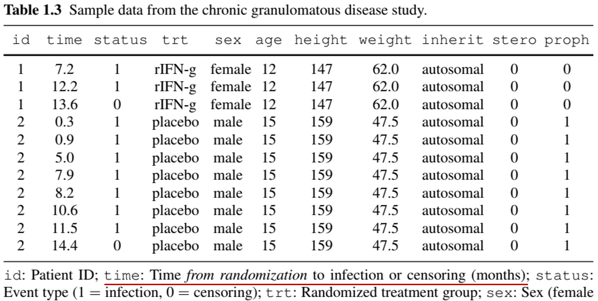
Example: Multivariate/Clustered Events (I)
- Diabetic Retinopathy Study
- Population: 197 high-risk diabetic patients in a randomized controlled trial
- Objective: Determine if photocoagulation (a laser treatment) delays blindness onset
- Design: One eye treated (by either xenon or argon), the other untreated (control)
- Challenge: Correlation between eyes
Example: Multivariate/Clustered Events (II)
- Diabetic Retinopathy Study
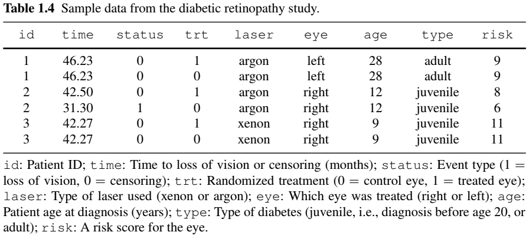
Example: Competing Risks (I)
- Definition: Multiple types of events where one prevents the occurrence of the others
- Natural example: different causes of death
- Competing risk vs censoring:
- Both terminate follow-up
- Competing risk: part of the outcome; inference based on its presence
- Censoring: irrelevant to outcome; inference based on its absence
- Example: death from prostate cancer as main outcome
- Death from other (metastasized) cancers \(\to\) competing risk
- Death from traffic accidents \(\to\) censoring
Example: Competing Risks (II)
Bone Marrow Transplant Study
- population: 864 multiple-myeloma leukemia patients undergoing allogeneic haematopoietic cell transplantation (HCT)
- Objective: Evaluate risk factors for treatment-related mortality (TRM) and relapse of leukemia
- Competing risks: TRM defined as death in remission (i.e., before relapse); thus is precluded by relapse
- Risk factors: cohort indicator (years 1995–2000 or 2001–2005), type of donor (unrelated or identical sibling), history of a prior transplant, time from diagnosis to transplantation (<24 months, or ≥ 24 months)
Example: Competing Risks (III)
- Bone Marrow Transplant Study
- Why only one record per patient?
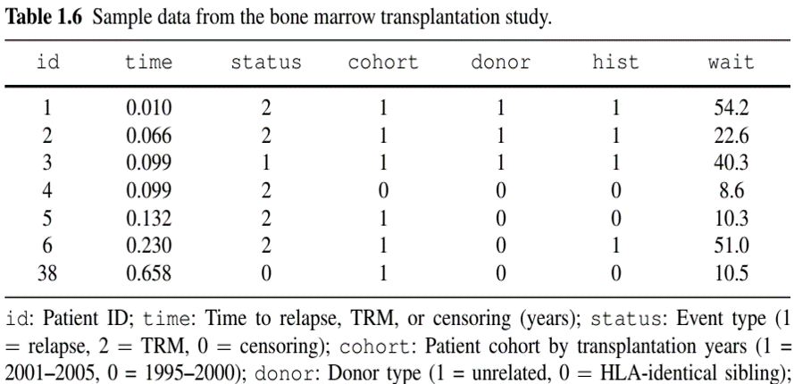
Example: More Complex Outcomes (Semi-competing risks)
- German Breast Cancer (GBC) Study
- Nonfatal event + terminal event (death)
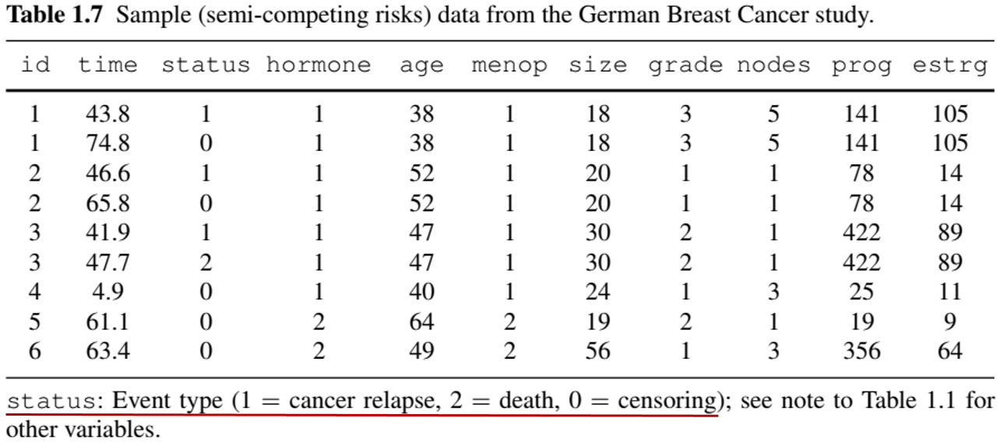
Example: More Complex Outcomes (with Longitudinal data)
- Anti-Retroviral Drug Trial
- Repeated measures of CD4 cell count + death
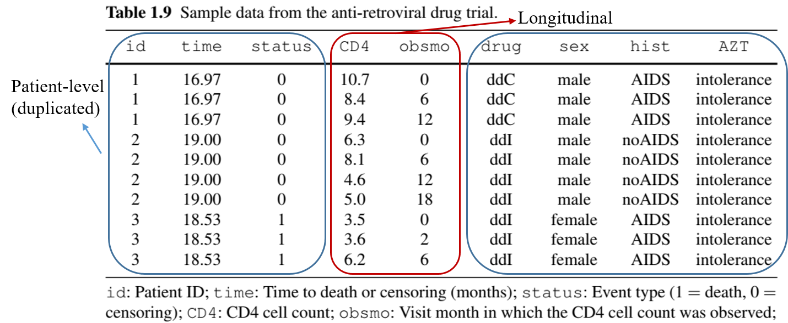
Example: More Complex Outcomes (Multistate process)
- Breast Cancer Life History Study
- Remission \(\to\) relapse \(\to\) metastasis \(\to\) death (can skip states)
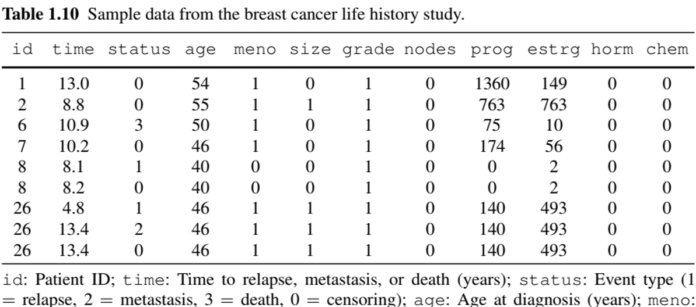
Example: Composite Endpoints(I)
- Composite endpoint: one with multiple components
- Recurrent/multivariate events
- (Semi-)Competing risks
- Longitudinal measurements
- Multistate processes
- Analysis of complex outcomes
- Marginal approach: models components separately
- Conditional approach: models components jointly
- Composite approach: combines components
- Progression/relapse-free survival (time to the earlier of progression/relapse or death)
Example: Composite Endpoints(II)
- Advantages:
- Concentrates information \(\to\) Statistical efficiency
- No need for multiple testing adjustment
- A single measure of overall effect size
- Preferred for primary analysis of Phase-III clinical trials by
- US Food and Drug Administration (FDA)
- ICH (International Council for Harmonisation for pharmaceuticals)
- Challenges:
- Statistical efficiency (e.g., beyond first event)
- Scientific relevance (e.g., relative importance of components)
Censoring mechanisms and implications
Censoring Mechanisms
- Two mechanisms
- Study termination (administrative censoring)
- Loss to follow-up (LTFU, e.g., withdrawal, death from other causes)
Caution about censoring
Event/censoring time \(=\) time from starting point (e.g., randomization) to event/censoring (as opposed to time on the calendar)
LTFU may not be independent of outcome (e.g., sicker patients withdraw early)
Collect withdrawal reasons if possible
Censoring or competing risk? \(\leftarrow\) Domain knowledge
Censoring Mechanisms: Illustration
- Calendar time vs time synchronized by starting point
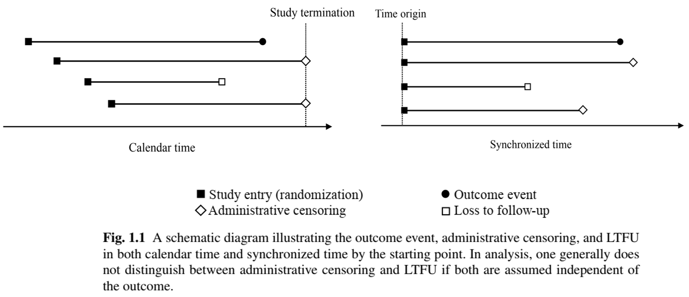
Statistical Implications (I)
- Censored observation
- Not completely missing!
- Partial information: event time \(>\) censoring time
- Ignoring partial information \(\to\) Bias in inference
- Naive approaches
- Treat censoring as event \(\to\) Underestimates time to event
- Exclude censored observations \(\to\) Underestimates time to event (longer event times more likely censored)
Statistical Implications (II)
Notation
- \(T\): Outcome event time
- \(C\): Censoring time
- Observed data: \(X=\min(T, C)\), \(\delta = I(T\leq C)\)
- (𝑋, 𝛿) = (
time,status) in previous data examples
- (𝑋, 𝛿) = (
Estimation
- Independent censoring assumption
\[ C \indep T\]
- Estimand: \(S(t)={\rm pr}(T > t)\), i.e., probability of subject “surviving” to time \(t\), using a random sample of \((X_i, \delta_i)\) \((i=1,\ldots, n)\)
Statistical Implications (III)
- Naive methods
Event-imputation empirical survival function: \[\hat S_{\rm imp}(t)=n^{-1}\sum_{i=1}^n I(X_i > t) \to {\rm pr}(X > t)\leq S(t)\]
Complete-case empirical survival function: \[\hat S_{\rm cc}(t)=\frac{\sum_{i=1}^n I(X_i > t, \delta_i = 1)}{\sum_{i=1}^n\delta_i} \to {\rm pr}(T > t\mid T\leq C)\leq S(t)\]
Both naïve methods underestimate the true survival function
Statistical Implications: Example
- German Breast Cancer (GBC) Study
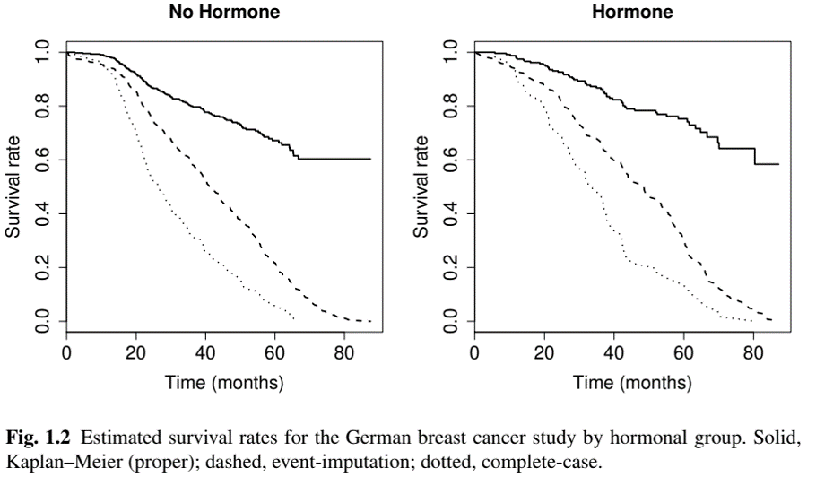
Summarizing Raw Data
Importance of Descriptive Analysis
- Statistical models rely more or less on assumptions
- Good practice to summarize data descriptively as first step
- Get to know the data
- Informs subsequent analysis
- Check balance of baseline characteristics between randomized arms
- “Table 1” in medical research papers
- Two types of summary statistics
- Subject-level characteristics (baseline variables, number of events per subject)
- Event rates (over aggregate length of follow-up)
How to Calculate Event Rate (I)
- Length of follow-up is event-specific
- If an event is “non-recurrent”, its occurrence means patient is no longer at risk for it
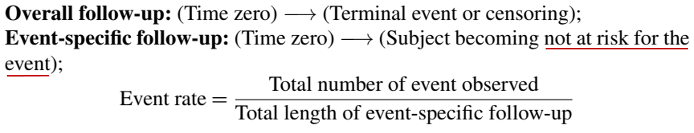
Note
Denominator is called person-year (or person-time) of follow-up.
How to Calculate Event Rate (II)
- Semi-competing risks
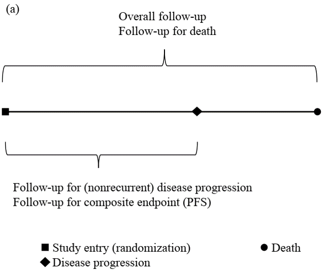
How to Calculate Event Rate (III)
- Recurrent events
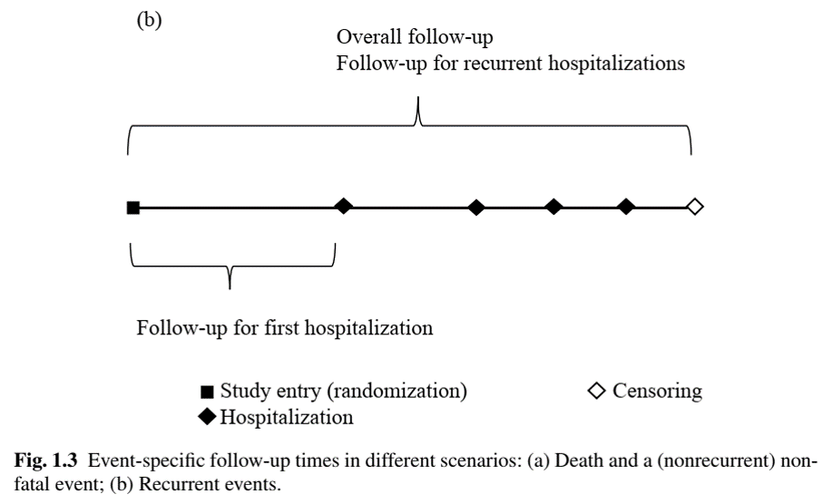
Table One: Example
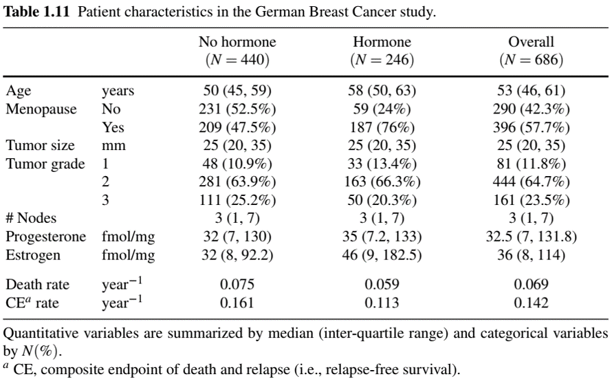
Conclusion
Chapter Summary
- Types of time-to-event outcomes
- Univariate, recurrent, multivariate/clustered, (semi-)competing risks, repeated measures, multistate processes, and everything in between…
- Common feature: censoring
- Arises if study ends or patient drops out prior to event
- Must be handled with care to avoid false conclusion
- Importance of descriptive analysis
- Event rate \(\to\) attention to denominator
HW1 (Due Feb 11)
- Choose one
- Problem 1.2 (Recommended for PhD in Stats/BDS)
- Problem 1.3
- Problem 1.9 (Attach you annotated code)
- (Extra credit) Problem 1.5
Guidelines for HW
- Present a readable and coherent text to report your methods and results
- Include numerical/graphical results only if they contribute to your narrative
- All tables and figures should be properly titled/captioned, with informative labels/legends
- Use full names instead of abbreviations/acronyms
- E.g., “meno” \(\to\) “Menopause (yes v no)”; “est” \(\to\) “Estrogen (fmol/mg)”
- Specify the unit of variable, e.g., “Age (years)”
- See Table 1.11 and Fig. 1.2 for examples
- Append the full code for diagnostic purposes